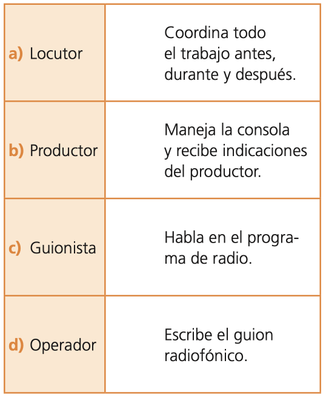

6º
Español
{{option.o}}
27.
Relaciona, anotando la letra del inciso correspondiente, las personas que intervienen en el programa de radio con sus funciones.

Te falta contestar las siguientes preguntas: